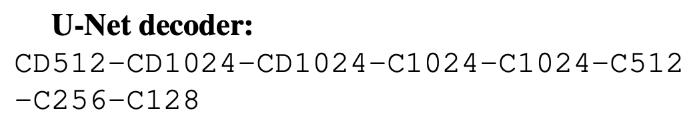

Overview
Paper investigates conditional adversarial networks as a general-purpose solution to various image-to-image translation tasks, acheives modest results at a low resolution(512x512).
Method
- Improved Objective - Adds contraints for conditional GANs
- U-Net 'type' Generator - Explores U-Net as an alternative to traditional Encoder-Decoder architecture
- 70x70 Patch GAN Discriminator - Evaluates in patches, saves on memory and gives comparable performance
Improved Objective
- Additionally constraints Generator outputs on the input rather than unconstrained output from noise
- Naive use of L2 distance without a Discriminator would yeild blurry results
- Discriminator as a 'learnable loss' function to better distinguish and force good results from the Generator
- Adds additional L1 distance contraint

Generator
- U-Net style encoder decoder architecture with skip connections


Discriminator
- 70x70 Patch Discriminator architecture is C64-C128-C256-C512
Results


Application: Drawings To Sketch
tweet linkSketches done using a graphics tablet, colored by a a real-time neural network trained unsupervised on #Pokemon pictures (x2) #pix2pix, #AI pic.twitter.com/MIW8HfO8KU
— Bertrand Gondouin (@bgondouin) January 9, 2017